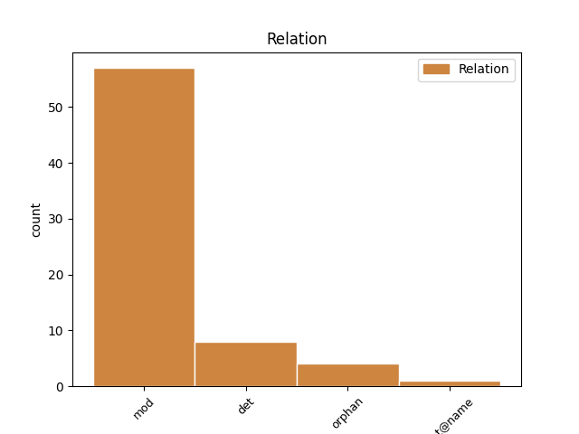
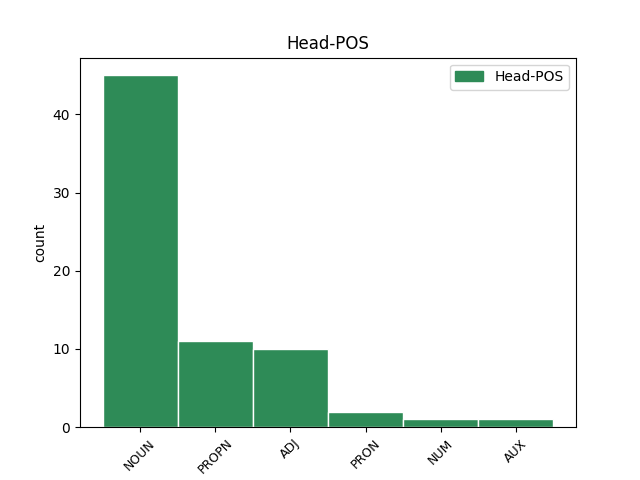
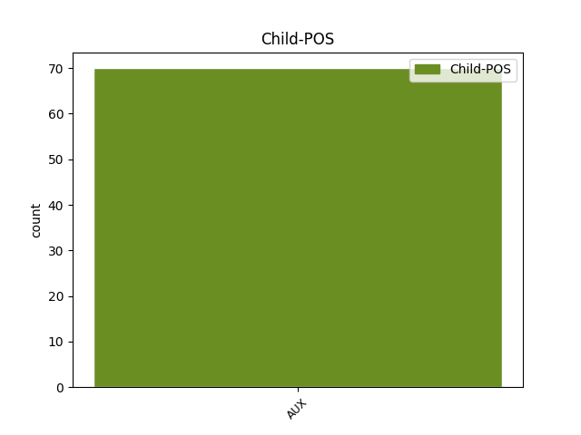

Distribution of features within this leaf



Agreement Rules sorted by frequency.
- When the dependent token is the modifer(mod) of the head token, and the head token is NOUN and the dependent token is AUX.
1 ὑμεῖς _ _ _ _ 0 _ _ _
2 γὰρ _ _ _ _ 0 _ _ _
3 μιμηταὶ _ _ _ _ 0 _ _ _
4 ἐγενήθητε _ _ _ _ 0 _ _ _
5 ἀδελφοί _ _ _ _ 0 _ _ _
6 τῶν _ _ _ _ 0 _ _ _
7 ἐκκλησιῶν ἐκκλησία NOUN Nb Case=Gen|Gender=Fem|Number=Plur 0 _ _ _
8 τοῦ _ _ _ _ 0 _ _ _
9 θεοῦ _ _ _ _ 0 _ _ _
10 τῶν _ _ _ _ 0 _ _ _
11 οὐσῶν εἰμί AUX V- Case=Gen|Gender=Fem|Number=Plur|Tense=Pres|VerbForm=Part|Voice=Act 7 mod _ LId=1|ref=1THESS_2.14
12 ἐν _ _ _ _ 0 _ _ _
13 τῇ _ _ _ _ 0 _ _ _
14 Ἰουδαίᾳ _ _ _ _ 0 _ _ _
15 ἐν _ _ _ _ 0 _ _ _
16 Χριστῷ _ _ _ _ 0 _ _ _
17 Ἰησοῦ _ _ _ _ 0 _ _ _
18 ὅτι _ _ _ _ 0 _ _ _
19 τὰ _ _ _ _ 0 _ _ _
20 αὐτὰ _ _ _ _ 0 _ _ _
21 ἐπάθετε _ _ _ _ 0 _ _ _
22 καὶ _ _ _ _ 0 _ _ _
23 ὑμεῖς _ _ _ _ 0 _ _ _
24 ὑπὸ _ _ _ _ 0 _ _ _
25 τῶν _ _ _ _ 0 _ _ _
26 ἰδίων _ _ _ _ 0 _ _ _
27 συμφυλετῶν _ _ _ _ 0 _ _ _
28 καθὼς _ _ _ _ 0 _ _ _
29 καὶ _ _ _ _ 0 _ _ _
30 αὐτοὶ _ _ _ _ 0 _ _ _
31 ὑπὸ _ _ _ _ 0 _ _ _
32 τῶν _ _ _ _ 0 _ _ _
33 Ἰουδαίων _ _ _ _ 0 _ _ _
34 τῶν _ _ _ _ 0 _ _ _
35 καὶ _ _ _ _ 0 _ _ _
36 τὸν _ _ _ _ 0 _ _ _
37 κύριον _ _ _ _ 0 _ _ _
38 ἀποκτεινάντων _ _ _ _ 0 _ _ _
39 Ἰησοῦν _ _ _ _ 0 _ _ _
40 καὶ _ _ _ _ 0 _ _ _
41 τοὺς _ _ _ _ 0 _ _ _
42 προφήτας _ _ _ _ 0 _ _ _
43 καὶ _ _ _ _ 0 _ _ _
44 ἡμᾶς _ _ _ _ 0 _ _ _
45 ἐκδιωξάντων _ _ _ _ 0 _ _ _
46 καὶ _ _ _ _ 0 _ _ _
47 θεῷ _ _ _ _ 0 _ _ _
48 μὴ _ _ _ _ 0 _ _ _
49 ἀρεσκόντων _ _ _ _ 0 _ _ _
50 καὶ _ _ _ _ 0 _ _ _
51 πᾶσιν _ _ _ _ 0 _ _ _
52 ἀνθρώποις _ _ _ _ 0 _ _ _
53 ἐναντίων _ _ _ _ 0 _ _ _
54 κωλυόντων _ _ _ _ 0 _ _ _
55 ἡμᾶς _ _ _ _ 0 _ _ _
56 τοῖς _ _ _ _ 0 _ _ _
57 ἔθνεσιν _ _ _ _ 0 _ _ _
58 λαλῆσαι _ _ _ _ 0 _ _ _
59 ἵνα _ _ _ _ 0 _ _ _
60 σωθῶσιν _ _ _ _ 0 _ _ _
61 εἰς _ _ _ _ 0 _ _ _
62 τὸ _ _ _ _ 0 _ _ _
63 ἀναπληρῶσαι _ _ _ _ 0 _ _ _
64 αὐτῶν _ _ _ _ 0 _ _ _
65 τὰς _ _ _ _ 0 _ _ _
66 ἁμαρτίας _ _ _ _ 0 _ _ _
67 πάντοτε _ _ _ _ 0 _ _ _
1 Ἀσπάζεται _ _ _ _ 0 _ _ _
2 ὑμᾶς _ _ _ _ 0 _ _ _
3 Ἀρίσταρχος Ἀρίσταρχος PROPN Ne Case=Nom|Gender=Masc|Number=Sing 0 _ _ _
4 ὁ _ _ _ _ 0 _ _ _
5 συναιχμάλωτός _ _ _ _ 0 _ _ _
6 μου _ _ _ _ 0 _ _ _
7 καὶ _ _ _ _ 0 _ _ _
8 Μᾶρκος _ _ _ _ 0 _ _ _
9 ὁ _ _ _ _ 0 _ _ _
10 ἀνεψιὸς _ _ _ _ 0 _ _ _
11 Βαρναβᾶ _ _ _ _ 0 _ _ _
12 περὶ _ _ _ _ 0 _ _ _
13 οὗ _ _ _ _ 0 _ _ _
14 ἐλάβετε _ _ _ _ 0 _ _ _
15 ἐντολάς _ _ _ _ 0 _ _ _
16 ἐὰν _ _ _ _ 0 _ _ _
17 ἔλθῃ _ _ _ _ 0 _ _ _
18 πρὸς _ _ _ _ 0 _ _ _
19 ὑμᾶς _ _ _ _ 0 _ _ _
20 δέξασθε _ _ _ _ 0 _ _ _
21 αὐτόν _ _ _ _ 0 _ _ _
22 καὶ _ _ _ _ 0 _ _ _
23 Ἰησοῦς _ _ _ _ 0 _ _ _
24 ὁ _ _ _ _ 0 _ _ _
25 λεγόμενος _ _ _ _ 0 _ _ _
26 Ἰοῦστος _ _ _ _ 0 _ _ _
27 οἱ _ _ _ _ 0 _ _ _
28 ὄντες εἰμί AUX V- Case=Nom|Gender=Masc|Number=Plur|Tense=Pres|VerbForm=Part|Voice=Act 3 mod _ LId=1|ref=COL_4.11
29 ἐκ _ _ _ _ 0 _ _ _
30 περιτομῆς _ _ _ _ 0 _ _ _
1 Παῦλος _ _ _ _ 0 _ _ _
2 καὶ _ _ _ _ 0 _ _ _
3 Τιμόθεος _ _ _ _ 0 _ _ _
4 δοῦλοι _ _ _ _ 0 _ _ _
5 Χριστοῦ _ _ _ _ 0 _ _ _
6 Ἰησοῦ _ _ _ _ 0 _ _ _
7 πᾶσιν _ _ _ _ 0 _ _ _
8 τοῖς _ _ _ _ 0 _ _ _
9 ἁγίοις ἅγιος ADJ A- Case=Dat|Degree=Pos|Gender=Masc|Number=Plur 0 _ _ _
10 ἐν _ _ _ _ 0 _ _ _
11 Χριστῷ _ _ _ _ 0 _ _ _
12 Ἰησοῦ _ _ _ _ 0 _ _ _
13 τοῖς _ _ _ _ 0 _ _ _
14 οὖσιν εἰμί AUX V- Case=Dat|Gender=Masc,Neut|Number=Plur|Tense=Pres|VerbForm=Part|Voice=Act 9 mod _ LId=1|ref=PHIL_1.1
15 ἐν _ _ _ _ 0 _ _ _
16 Φιλίπποις _ _ _ _ 0 _ _ _
17 σὺν _ _ _ _ 0 _ _ _
18 ἐπισκόποις _ _ _ _ 0 _ _ _
19 καὶ _ _ _ _ 0 _ _ _
20 διακόνοις _ _ _ _ 0 _ _ _
1 Τοῦτο _ _ _ _ 0 _ _ _
2 οὖν _ _ _ _ 0 _ _ _
3 λέγω _ _ _ _ 0 _ _ _
4 καὶ _ _ _ _ 0 _ _ _
5 μαρτύρομαι _ _ _ _ 0 _ _ _
6 ἐν _ _ _ _ 0 _ _ _
7 κυρίῳ _ _ _ _ 0 _ _ _
8 μηκέτι _ _ _ _ 0 _ _ _
9 ὑμᾶς _ _ _ _ 0 _ _ _
10 περιπατεῖν _ _ _ _ 0 _ _ _
11 καθὼς _ _ _ _ 0 _ _ _
12 καὶ _ _ _ _ 0 _ _ _
13 τὰ _ _ _ _ 0 _ _ _
14 ἔθνη _ _ _ _ 0 _ _ _
15 περιπατεῖ _ _ _ _ 0 _ _ _
16 ἐν _ _ _ _ 0 _ _ _
17 ματαιότητι _ _ _ _ 0 _ _ _
18 τοῦ _ _ _ _ 0 _ _ _
19 νοὸς _ _ _ _ 0 _ _ _
20 αὐτῶν _ _ _ _ 0 _ _ _
21 ἐσκοτωμένοι _ _ _ _ 0 _ _ _
22 τῇ _ _ _ _ 0 _ _ _
23 διανοίᾳ _ _ _ _ 0 _ _ _
24 ὄντες _ _ _ _ 0 _ _ _
25 ἀπηλλοτριωμένοι _ _ _ _ 0 _ _ _
26 τῆς _ _ _ _ 0 _ _ _
27 ζωῆς _ _ _ _ 0 _ _ _
28 τοῦ _ _ _ _ 0 _ _ _
29 θεοῦ _ _ _ _ 0 _ _ _
30 διὰ _ _ _ _ 0 _ _ _
31 τὴν _ _ _ _ 0 _ _ _
32 ἄγνοιαν ἄγνοια NOUN Nb Case=Acc|Gender=Fem|Number=Sing 0 _ _ _
33 τὴν _ _ _ _ 0 _ _ _
34 οὖσαν εἰμί AUX V- Case=Acc|Gender=Fem|Number=Sing|Tense=Pres|VerbForm=Part|Voice=Act 32 det _ LId=1|ref=EPH_4.18
35 ἐν _ _ _ _ 0 _ _ _
36 αὐτοῖς _ _ _ _ 0 _ _ _
37 διὰ _ _ _ _ 0 _ _ _
38 τὴν _ _ _ _ 0 _ _ _
39 πώρωσιν _ _ _ _ 0 _ _ _
40 τῆς _ _ _ _ 0 _ _ _
41 καρδίας _ _ _ _ 0 _ _ _
42 αὐτῶν _ _ _ _ 0 _ _ _
43 οἵτινες _ _ _ _ 0 _ _ _
44 ἀπηλγηκότες _ _ _ _ 0 _ _ _
45 ἑαυτοὺς _ _ _ _ 0 _ _ _
46 παρέδωκαν _ _ _ _ 0 _ _ _
47 τῇ _ _ _ _ 0 _ _ _
48 ἀσελγείᾳ _ _ _ _ 0 _ _ _
49 εἰς _ _ _ _ 0 _ _ _
50 ἐργασίαν _ _ _ _ 0 _ _ _
51 ἀκαθαρσίας _ _ _ _ 0 _ _ _
52 πάσης _ _ _ _ 0 _ _ _
53 ἐν _ _ _ _ 0 _ _ _
54 πλεονεξίᾳ _ _ _ _ 0 _ _ _
1 οἱ _ _ _ _ 0 _ _ _
2 οὖν _ _ _ _ 0 _ _ _
3 Ἰουδαῖοι Ἰουδαῖος ADJ A- Case=Nom|Degree=Pos|Gender=Masc|Number=Plur 0 _ _ _
4 οἱ _ _ _ _ 0 _ _ _
5 ὄντες εἰμί AUX V- Case=Nom|Gender=Masc|Number=Plur|Tense=Pres|VerbForm=Part|Voice=Act 3 det _ LId=1|ref=JOHN_11.31
6 μετ’ _ _ _ _ 0 _ _ _
7 αὐτῆς _ _ _ _ 0 _ _ _
8 ἐν _ _ _ _ 0 _ _ _
9 τῇ _ _ _ _ 0 _ _ _
10 οἰκίᾳ _ _ _ _ 0 _ _ _
11 καὶ _ _ _ _ 0 _ _ _
12 παραμυθούμενοι _ _ _ _ 0 _ _ _
13 αὐτήν _ _ _ _ 0 _ _ _
14 ἰδόντες _ _ _ _ 0 _ _ _
15 τὴν _ _ _ _ 0 _ _ _
16 Μαριὰμ _ _ _ _ 0 _ _ _
17 ὅτι _ _ _ _ 0 _ _ _
18 ταχέως _ _ _ _ 0 _ _ _
19 ἀνέστη _ _ _ _ 0 _ _ _
20 καὶ _ _ _ _ 0 _ _ _
21 ἐξῆλθεν _ _ _ _ 0 _ _ _
22 ἠκολούθησαν _ _ _ _ 0 _ _ _
23 αὐτῇ _ _ _ _ 0 _ _ _
24 δόξαντες _ _ _ _ 0 _ _ _
25 ὅτι _ _ _ _ 0 _ _ _
26 ὑπάγει _ _ _ _ 0 _ _ _
27 εἰς _ _ _ _ 0 _ _ _
28 τὸ _ _ _ _ 0 _ _ _
29 μνημεῖον _ _ _ _ 0 _ _ _
30 ἵνα _ _ _ _ 0 _ _ _
31 κλαύσῃ _ _ _ _ 0 _ _ _
32 ἐκεῖ _ _ _ _ 0 _ _ _
1 ἐν _ _ _ _ 0 _ _ _
2 δὲ _ _ _ _ 0 _ _ _
3 φάρσεϊ _ _ _ _ 0 _ _ _
4 ἑκατέρῳ _ _ _ _ 0 _ _ _
5 τῆς _ _ _ _ 0 _ _ _
6 πόλιος _ _ _ _ 0 _ _ _
7 ἐτετείχιστο _ _ _ _ 0 _ _ _
8 ἐν _ _ _ _ 0 _ _ _
9 μέσῳ _ _ _ _ 0 _ _ _
10 ἐν _ _ _ _ 0 _ _ _
11 τῷ _ _ _ _ 0 _ _ _
12 μὲν _ _ _ _ 0 _ _ _
13 τὰ _ _ _ _ 0 _ _ _
14 βασιλήια _ _ _ _ 0 _ _ _
15 περιβόλῳ _ _ _ _ 0 _ _ _
16 μεγάλῳ _ _ _ _ 0 _ _ _
17 τε _ _ _ _ 0 _ _ _
18 καὶ _ _ _ _ 0 _ _ _
19 ἰσχυρῷ _ _ _ _ 0 _ _ _
20 ἐν _ _ _ _ 0 _ _ _
21 δὲ _ _ _ _ 0 _ _ _
22 τῷ _ _ _ _ 0 _ _ _
23 ἑτέρῳ _ _ _ _ 0 _ _ _
24 Διὸς _ _ _ _ 0 _ _ _
25 Βήλου _ _ _ _ 0 _ _ _
26 ἱρὸν ἱερόν NOUN Nb Case=Nom|Gender=Neut|Number=Sing 0 _ _ _
27 χαλκόπυλον _ _ _ _ 0 _ _ _
28 καὶ _ _ _ _ 0 _ _ _
29 ἐς _ _ _ _ 0 _ _ _
30 ἐμὲ _ _ _ _ 0 _ _ _
31 ἔτι _ _ _ _ 0 _ _ _
32 τοῦτο _ _ _ _ 0 _ _ _
33 ἐόν _ _ _ _ 0 _ _ _
34 δύο _ _ _ _ 0 _ _ _
35 σταδίων _ _ _ _ 0 _ _ _
36 πάντῃ _ _ _ _ 0 _ _ _
37 ἐὸν εἰμί AUX V- Case=Nom|Gender=Neut|Number=Sing|Tense=Pres|VerbForm=Part|Voice=Act 26 orphan _ LId=1|ref=1.181.2
38 τετράγωνον _ _ _ _ 0 _ _ _
1 περὶ _ _ _ _ 0 _ _ _
2 πάντων _ _ _ _ 0 _ _ _
3 ὧν _ _ _ _ 0 _ _ _
4 ἐγκαλοῦμαι _ _ _ _ 0 _ _ _
5 ὑπὸ _ _ _ _ 0 _ _ _
6 Ἰουδαίων _ _ _ _ 0 _ _ _
7 βασιλεῦ _ _ _ _ 0 _ _ _
8 Ἀγρίππα _ _ _ _ 0 _ _ _
9 ἥγημαι _ _ _ _ 0 _ _ _
10 ἐμαυτὸν _ _ _ _ 0 _ _ _
11 μακάριον _ _ _ _ 0 _ _ _
12 ἐπὶ _ _ _ _ 0 _ _ _
13 σοῦ _ _ _ _ 0 _ _ _
14 μέλλων _ _ _ _ 0 _ _ _
15 σήμερον _ _ _ _ 0 _ _ _
16 ἀπολογεῖσθαι _ _ _ _ 0 _ _ _
17 μάλιστα _ _ _ _ 0 _ _ _
18 γνώστην _ _ _ _ 0 _ _ _
19 σε σύ PRON Pp Case=Acc|Gender=Masc|Number=Sing|Person=2|PronType=Prs 0 _ _ _
20 ὄντα εἰμί AUX V- Case=Acc|Gender=Masc|Number=Sing|Tense=Pres|VerbForm=Part|Voice=Act 19 orphan _ LId=1|ref=ACTS_26.3
21 πάντων _ _ _ _ 0 _ _ _
22 τῶν _ _ _ _ 0 _ _ _
23 κατὰ _ _ _ _ 0 _ _ _
24 Ἰουδαίους _ _ _ _ 0 _ _ _
25 ἐθῶν _ _ _ _ 0 _ _ _
26 τε _ _ _ _ 0 _ _ _
27 καὶ _ _ _ _ 0 _ _ _
28 ζητημάτων _ _ _ _ 0 _ _ _
1 οἱ _ _ _ _ 0 _ _ _
2 δὲ _ _ _ _ 0 _ _ _
3 εἰνακισχίλιοι ἐνακισχίλιοι NUM Ma Case=Nom|Gender=Masc|Number=Plur 0 _ _ _
4 ἐντὸς _ _ _ _ 0 _ _ _
5 τούτων _ _ _ _ 0 _ _ _
6 ἐόντες εἰμί AUX V- Case=Nom|Gender=Masc|Number=Plur|Tense=Pres|VerbForm=Part|Voice=Act 3 det _ LId=1|ref=7.41.2
7 ἀργυρέας _ _ _ _ 0 _ _ _
8 ῥοιὰς _ _ _ _ 0 _ _ _
9 εἶχον _ _ _ _ 0 _ _ _
1 ἀπικόμενος _ _ _ _ 0 _ _ _
2 δὲ _ _ _ _ 0 _ _ _
3 τῆς _ _ _ _ 0 _ _ _
4 Ἀχαιίης _ _ _ _ 0 _ _ _
5 ἐς _ _ _ _ 0 _ _ _
6 Ἄλον _ _ _ _ 0 _ _ _
7 ἀποβὰς _ _ _ _ 0 _ _ _
8 ἐπορεύετο _ _ _ _ 0 _ _ _
9 ἐς _ _ _ _ 0 _ _ _
10 Θεσσαλίην _ _ _ _ 0 _ _ _
11 τὰς _ _ _ _ 0 _ _ _
12 νέας _ _ _ _ 0 _ _ _
13 αὐτοῦ _ _ _ _ 0 _ _ _
14 καταλιπών _ _ _ _ 0 _ _ _
15 καὶ _ _ _ _ 0 _ _ _
16 ἀπίκετο _ _ _ _ 0 _ _ _
17 ἐς _ _ _ _ 0 _ _ _
18 τὰ _ _ _ _ 0 _ _ _
19 Τέμπεα _ _ _ _ 0 _ _ _
20 ἐς _ _ _ _ 0 _ _ _
21 τὴν _ _ _ _ 0 _ _ _
22 ἐσβολὴν _ _ _ _ 0 _ _ _
23 ἥ _ _ _ _ 0 _ _ _
24 περ _ _ _ _ 0 _ _ _
25 ἀπὸ _ _ _ _ 0 _ _ _
26 Μακεδονίης _ _ _ _ 0 _ _ _
27 τῆς _ _ _ _ 0 _ _ _
28 κάτω _ _ _ _ 0 _ _ _
29 ἐς _ _ _ _ 0 _ _ _
30 Θεσσαλίην _ _ _ _ 0 _ _ _
31 φέρει _ _ _ _ 0 _ _ _
32 παρὰ _ _ _ _ 0 _ _ _
33 ποταμὸν _ _ _ _ 0 _ _ _
34 Πηνειόν Πηνειός PROPN Ne Case=Acc|Gender=Masc|Number=Sing 0 _ _ _
35 μεταξὺ _ _ _ _ 0 _ _ _
36 δὲ _ _ _ _ 0 _ _ _
37 Ὀλύμπου _ _ _ _ 0 _ _ _
38 τε _ _ _ _ 0 _ _ _
39 ὄρεος _ _ _ _ 0 _ _ _
40 ἐόντα εἰμί AUX V- Case=Acc|Gender=Masc|Number=Sing|Tense=Pres|VerbForm=Part|Voice=Act 34 flat@name _ LId=1|ref=7.173.1
41 καὶ _ _ _ _ 0 _ _ _
42 τῆς _ _ _ _ 0 _ _ _
43 Ὄσσης _ _ _ _ 0 _ _ _
Disagree Examples:
1 μέχρι _ _ _ _ 0 _ _ _
2 μέν _ _ _ _ 0 _ _ _
3 νυν _ _ _ _ 0 _ _ _
4 τούτου _ _ _ _ 0 _ _ _
5 τοῦ _ _ _ _ 0 _ _ _
6 χώρου _ _ _ _ 0 _ _ _
7 καὶ _ _ _ _ 0 _ _ _
8 Θερμοπυλέων _ _ _ _ 0 _ _ _
9 ἀπαθής _ _ _ _ 0 _ _ _
10 τε _ _ _ _ 0 _ _ _
11 κακῶν _ _ _ _ 0 _ _ _
12 ἦν _ _ _ _ 0 _ _ _
13 ὁ _ _ _ _ 0 _ _ _
14 στρατός _ _ _ _ 0 _ _ _
15 καὶ _ _ _ _ 0 _ _ _
16 πλῆθος _ _ _ _ 0 _ _ _
17 ἦν _ _ _ _ 0 _ _ _
18 τηνικαῦτα _ _ _ _ 0 _ _ _
19 ἔτι _ _ _ _ 0 _ _ _
20 ὡς _ _ _ _ 0 _ _ _
21 ἐγὼ _ _ _ _ 0 _ _ _
22 συμβαλλόμενος _ _ _ _ 0 _ _ _
23 εὑρίσκω _ _ _ _ 0 _ _ _
24 τῶν _ _ _ _ 0 _ _ _
25 μὲν _ _ _ _ 0 _ _ _
26 ἐκ _ _ _ _ 0 _ _ _
27 τῶν _ _ _ _ 0 _ _ _
28 νεῶν _ _ _ _ 0 _ _ _
29 τῶν _ _ _ _ 0 _ _ _
30 ἐκ _ _ _ _ 0 _ _ _
31 τῆς _ _ _ _ 0 _ _ _
32 Ἀσίης _ _ _ _ 0 _ _ _
33 ἐουσέων εἰμί AUX V- Case=Gen|Gender=Fem|Number=Plur|Tense=Pres|VerbForm=Part|Voice=Act 45 mod _ LId=1|ref=7.184.1
34 ἑπτὰ _ _ _ _ 0 _ _ _
35 καὶ _ _ _ _ 0 _ _ _
36 διηκοσιέων _ _ _ _ 0 _ _ _
37 καὶ _ _ _ _ 0 _ _ _
38 χιλιέων _ _ _ _ 0 _ _ _
39 τὸν _ _ _ _ 0 _ _ _
40 μὲν _ _ _ _ 0 _ _ _
41 ἀρχαῖον _ _ _ _ 0 _ _ _
42 ἑκάστων _ _ _ _ 0 _ _ _
43 τῶν _ _ _ _ 0 _ _ _
44 ἐθνέων _ _ _ _ 0 _ _ _
45 ἐόντα εἰμί AUX V- Case=Acc|Gender=Masc|Number=Sing|Tense=Pres|VerbForm=Part|Voice=Act 0 _ _ _
46 ὅμιλον _ _ _ _ 0 _ _ _
47 τέσσερας _ _ _ _ 0 _ _ _
48 καὶ _ _ _ _ 0 _ _ _
49 εἴκοσι _ _ _ _ 0 _ _ _
50 μυριάδας _ _ _ _ 0 _ _ _
51 καὶ _ _ _ _ 0 _ _ _
52 πρὸς _ _ _ _ 0 _ _ _
53 χιλιάδα _ _ _ _ 0 _ _ _
54 τε _ _ _ _ 0 _ _ _
55 καὶ _ _ _ _ 0 _ _ _
56 τετρακοσίους _ _ _ _ 0 _ _ _
57 ὡς _ _ _ _ 0 _ _ _
58 ἀνὰ _ _ _ _ 0 _ _ _
59 διηκοσίους _ _ _ _ 0 _ _ _
60 ἄνδρας _ _ _ _ 0 _ _ _
61 λογιζομένοισι _ _ _ _ 0 _ _ _
62 ἐν _ _ _ _ 0 _ _ _
63 ἑκάστῃ _ _ _ _ 0 _ _ _
64 νηί _ _ _ _ 0 _ _ _
1 ἀσπάσασθε _ _ _ _ 0 _ _ _
2 τοὺς _ _ _ _ 0 _ _ _
3 ἐκ _ _ _ _ 0 _ _ _
4 τῶν _ _ _ _ 0 _ _ _
5 Ναρκίσσου Νάρκισσος NOUN Nb Case=Gen|Gender=Masc|Number=Sing 0 _ _ _
6 τοὺς _ _ _ _ 0 _ _ _
7 ὄντας εἰμί AUX V- Case=Acc|Gender=Masc|Number=Plur|Tense=Pres|VerbForm=Part|Voice=Act 5 mod _ LId=1|ref=ROM_16.11
8 ἐν _ _ _ _ 0 _ _ _
9 κυρίῳ _ _ _ _ 0 _ _ _